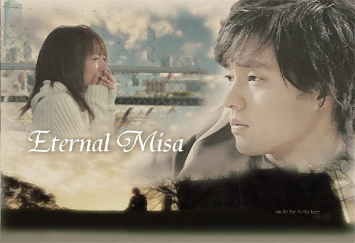
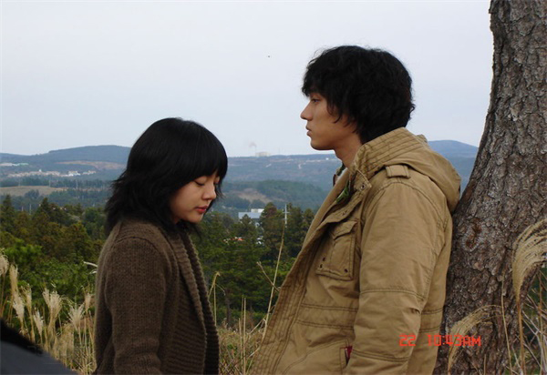
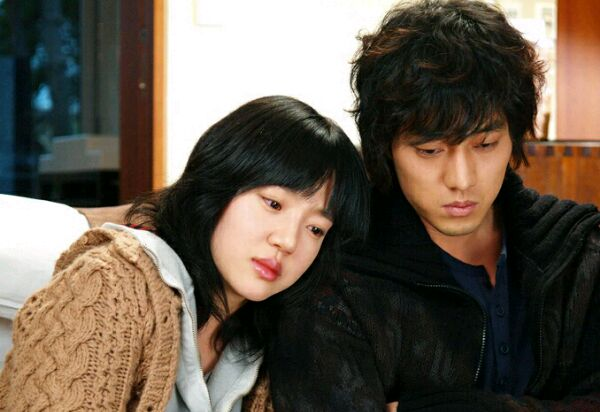
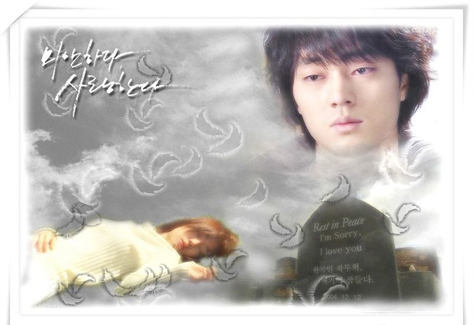

影片花絮




影评
我觉得对不起，我爱你是一部被爱情伤过的人才能看懂的一部好片
其实，看过的电影也不算少了，但是还是被本片的柔软感动了，我知道狗血是个贬义词，在经历过各种无脑催泪的韩剧后，大家都会免疫了。可是三段并不相关联的故事却透露着浓浓的人性和温情，关于生命与爱，永远是无法说尽的话题，有暗恋，有后悔，有传承的爱共同组成了本片，还是要给个满分。
我觉得对不起，我爱你是一部被爱情伤过的人才能看懂的一部好片
其实，看过的电影也不算少了，但是还是被本片的柔软感动了，我知道狗血是个贬义词，在经历过各种无脑催泪的韩剧后，大家都会免疫了。可是三段并不相关联的故事却透露着浓浓的人性和温情，关于生命与爱，永远是无法说尽的话题，有暗恋，有后悔，有传承的爱共同组成了本片，还是要给个满分。
免责声明：如果侵犯了您的权益，请发邮件至2528140280@qq.com，我们会及时删除侵权内容，谢谢合作！
Copyright©2017-2018 All Rights Reserved